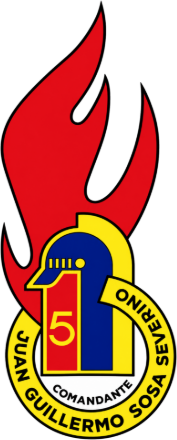
Brigada de Cadetes «Comandante Juan Guillermo Sosa Severino»El 26 de noviembre de 1994 marcó un importante hito en la historia de la Quinta Compañía de Bomberos de Talcahuano. Aquel día, durante una sesión solemne presidida por el entonces Director, Sr. José Sosa Ruiz (Q.E.P.D.), se acordó oficialmente la fundación de nuestra Brigada Juvenil, dando vida a un proyecto que había comenzado a gestarse muchos años antes.
Ya desde finales de la década de 1970 existía entre los integrantes de nuestra Compañía la intención de formar una Brigada de Cadetes. Sin embargo, pese a los esfuerzos e iniciativas de aquellos años, este anhelo no logró concretarse sino hasta aquel histórico 26 de noviembre de 1994, cuando finalmente se materializó la creación de la Brigada de Cadetes «Comandante Juan Guillermo Sosa Severino».
Esta iniciativa nació con un propósito claro: formar a las futuras generaciones de voluntarios de nuestra compañía, inculcando desde temprana edad los valores de disciplina, responsabilidad, camaradería, compromiso y vocación de servicio que han caracterizado históricamente a nuestra institución.
La fundación de esta Brigada contó con la participación de destacados integrantes de nuestra institución, entre ellos el entonces Capitán de Compañía, Sr. Jorge Ogalde Gómez, y el Superintendente del Cuerpo de Bomberos de Talcahuano, Sr. Lientur Grandón Inda, quienes, junto al Director José Sosa Ruiz, suscribieron el acta fundacional, dejando constancia de este importante acontecimiento para nuestra historia institucional.
Aquel compromiso quedó escrito a mano en el acta que hasta hoy conservamos con orgullo:
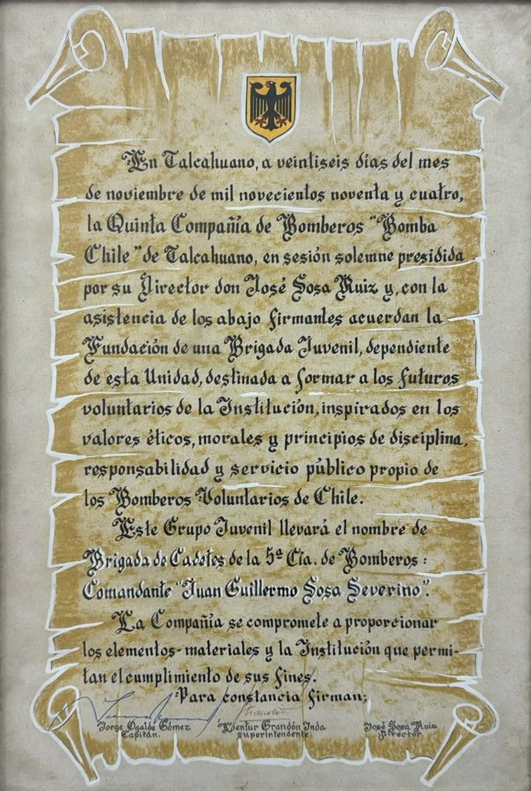
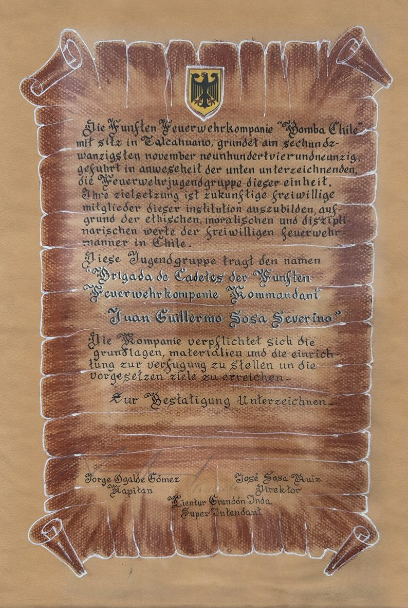
Nuestro lema
Desde su creación, la Brigada adoptó como lema una frase que expresa el sentido de su existencia:
«Aprendiendo para servir»
«Lernen zu dienen»
Estas palabras reflejan el espíritu de la formación juvenil bomberil: aprender, prepararse y adquirir los conocimientos necesarios para, llegado el momento, ponerlos al servicio de los demás.
Primera generación
La formación de nuestra primera generación de cadetes quedó a cargo del Teniente 4° e instructor, Sr. Gabriel Tobella Leiva, quien asumió la importante labor de acompañar a los jóvenes en sus primeros pasos dentro de la vida bomberil. Bajo su guía, catorce jóvenes dieron inicio a esta historia:
- Patricio Pincheira Barbe
- Óscar Mellado Toledo
- Gabriel Aguilera Riquelme
- Claudio Ceballos Arias
- Lisandro Araya Fritis
- Pedro Luengo Ortiz
- Jorge Ramírez Montecinos
- Miguel Macchiavello Goldberg
- Emilio Macera Alvarado
- Alexis Concha San Martín
- Pedro Santuber Tejo
- Mauricio Astete Muñoz
- Francisco Jiménez Dorrego
- Roberto Henríquez Mora
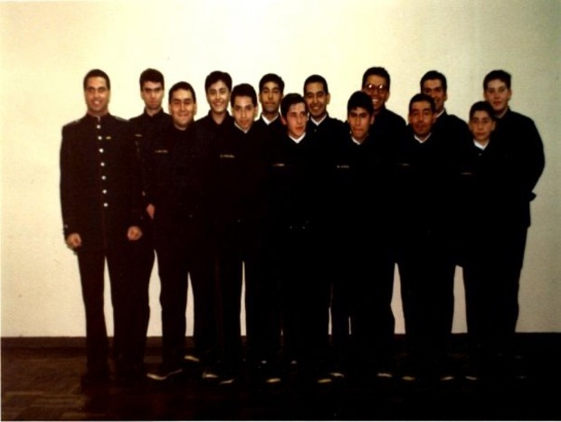
Sus nombres forman parte de los primeros capítulos de nuestra Brigada Juvenil, representando el comienzo de un proyecto destinado a transmitir los principios y tradiciones de nuestra Compañía a las nuevas generaciones.
Más que un espacio de instrucción, nuestra Brigada Juvenil representa una escuela de valores, donde la disciplina, el respeto, la responsabilidad y la camaradería constituyen los pilares fundamentales en la formación de quienes aspiran a convertirse en voluntarios de la Quinta Compañía.
Porque el futuro de nuestra Compañía comienza con la formación de sus nuevas generaciones.
Galería
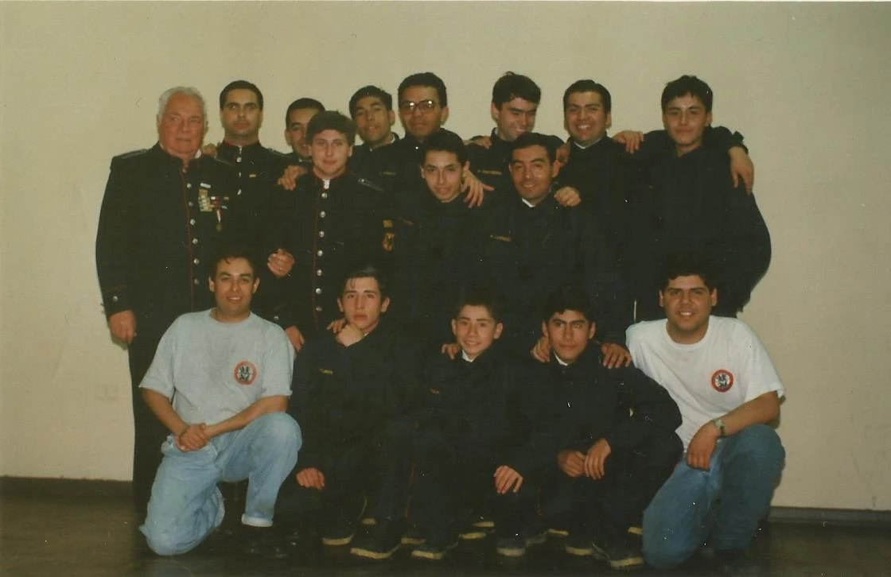
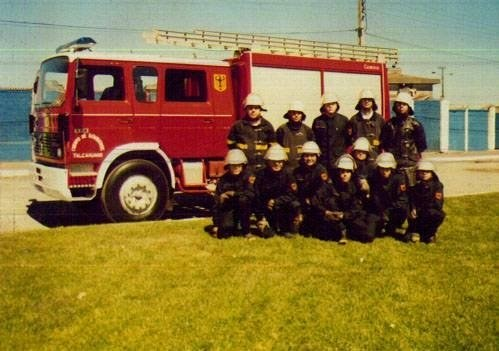
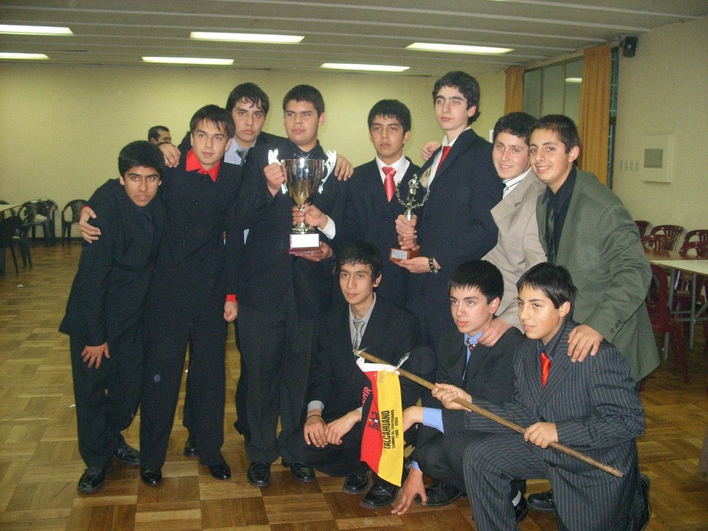
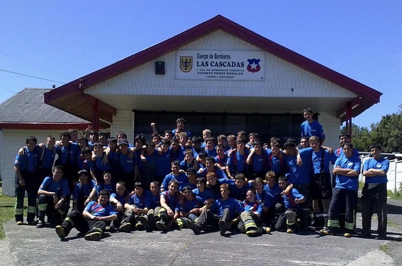
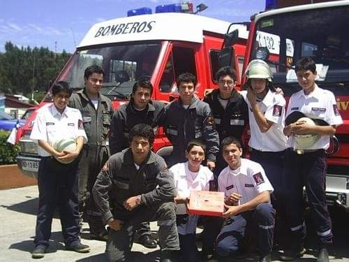
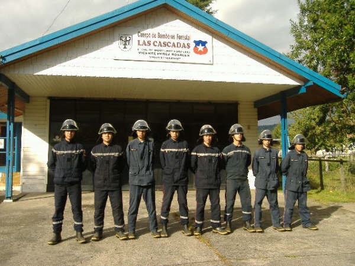
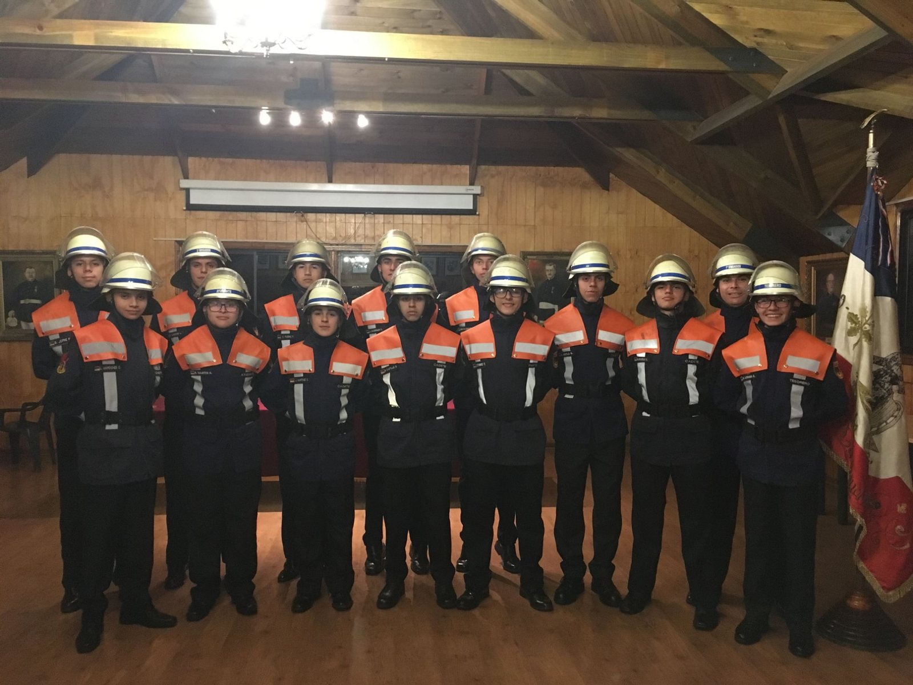